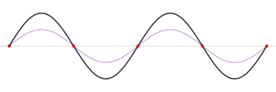

Contents
Preset, Save and Revert
You can easily change the values of any parameter by tapping it and the other values will
recalculate automatically. As a convenience, you can restore the display to Preset or Revert values.
Preset will restore the displayed values to the custom set of values that you have
stored.
Save Current as Preset will save all of the current settings. These custom values will
be set when the app starts up and whenever you select Preset.
Revert will set the displayed values to the original factory settings.
Overview
This app provides some powerful and simple-to-use tools to deal with reflections in a transmission
line. A reflection occurs when a signal travels on a transmission line and encounters a change in
characteristic impedance. Like light, when radio frequency (RF) energy encounters a discontinuity or
unmatched impedance, the energy is split between transmission into or past the discontinuity and a
reflection back towards the source.

While the Source and a Load each have a reflection situation caused by the Source and Load
discontinuity, the reflected waves interact with each other and, due to the magnitude and phase
of the reflections, there will be uncertainties in the magnitude and phase of the combined
signal.
This app allow you to:
- Easily convert between terms describing a mismatch: Return Loss, Γ (Gamma), Load
Resistance and VSWR
- Instantly show the impact of reflections in terms of Mismatch Loss
- Show how a source and a load impedance interact to cause Mismatch Uncertainty.
You can select any of the reflection terms for the Load or Source and edit the value. You can
also change the characteristic impedance Z0. The updated value is use to recalculate all of the
remaining values.
Return Loss
Return loss is the ratio of the incident power to the reflected power. It is represented as a
power ratio, in dB. Since it is defined as a loss, it is a positive value.
Gamma
The reflection coefficient, or commonly Γ ("Gamma"), is the ratio of the reflected voltage
(Vr) to the forward or incident voltage (Vf). Γ is typically a unitless ratio with 1.0
representing a complete reflection which occurs at an open or a short impedance. A perfectly
matched termination has a Γ of 0.
You can calculate the Γ from the value of transmission line impedance, ZS and
the Load impedance ZL:
VSWR
VSWR stands for "Voltage Standing Wave Ratio". It is also referred to as "SWR", standing wave ratio,
and is often pronounced "swur" to rhyme with "fur". When a reflection occurs, the incident and
reflected waves add and subtract along the transmission line to form maximum and minimum voltages.
The measure of the max-to-min voltages provide yet another view into the magnitude of the
reflection, just like Γ or Return Loss.
R Load
For a given Reflection Coefficient or Γ, there exists two solutions for |ZL| that
could cause that particular reflection. One is larger than the characteristic impedance (approaching
an open) and one is smaller (approaching a short). While complex values are possible too, this app
calculates the 2 purely resistive solutions (R>Z0 and R<Z0). These
values can be edited like the other values in order to re-calculate everything else.
Mismatch Loss
When a signal encounters an impedance discontinuity, there is a reflection of some energy. This can
be modeled as a loss, since the transmission path experienced a loss of signal strength due to the
reflection. The calculation of this Mismatch Loss (in dB) is as follows, where Pi is the
incident power level in Watts and Pr is the reflected power level in Watts.
Mismatch Error
Mismatch error is the result of two mismatch conditions interacting with each other: one at the
source, and one at the load. A series of reflections and re-reflections occur, resulting in
constructive and destructive combinations of the series of waves. The actual result is a complicated
function of the phases of the source and load mismatch. This app will calculate the worst case of
the possible magnitude and phase errors.
The magnitude error is calculated by:
+ 20 * log (1 + |ΓS * ΓL| ) [dB]
- 20 * log (1 - |ΓS * ΓL| ) [dB]
The phase error is calculated by:
± (180 / π) * (|ΓS| * |ΓL|) [°]